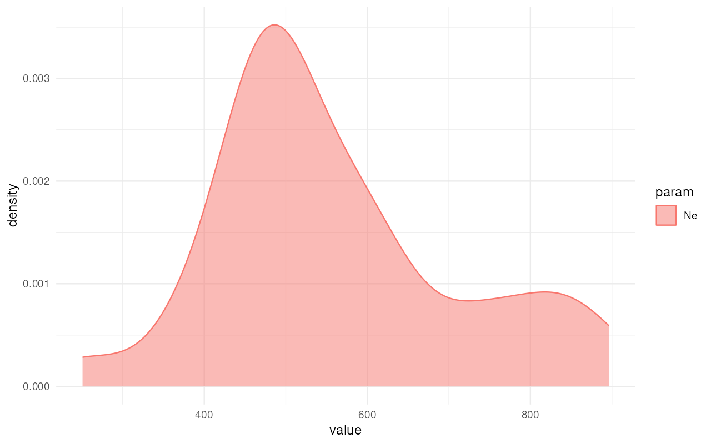
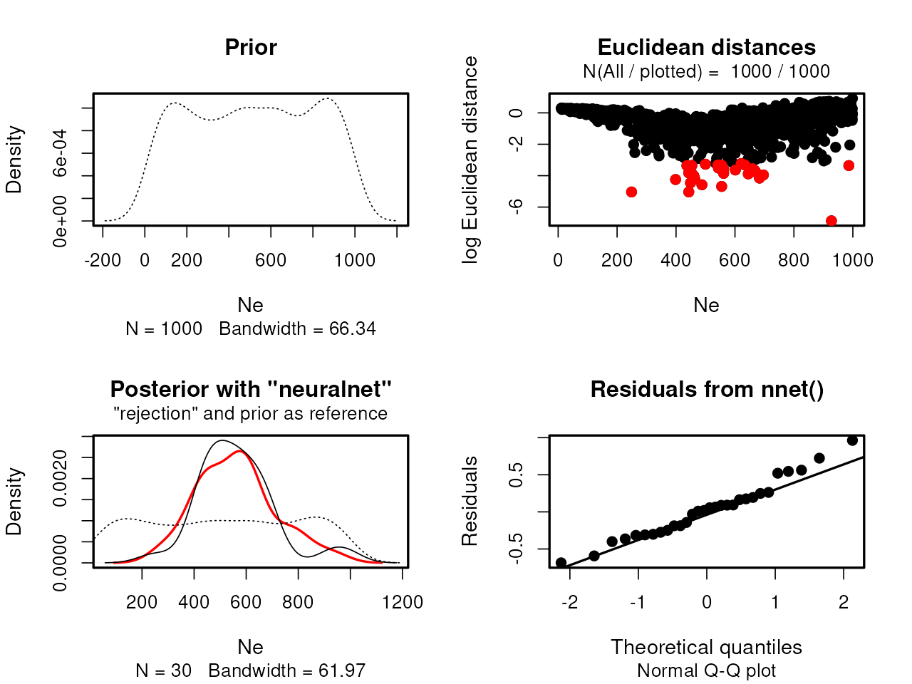

vignette-05-custom-engines.RmdBy default, demografr uses the slendr simulation framework for defining models and simulating data from them. But what if you need to do inference using your own scripts? Perhaps slendr’s opinionated interface doesn’t allow you to do all that you need to do, such as using all powerful simulation features and options of raw SLiM or msprime? This vignette explains how you can use any standard SLiM or msprime script which produces a tree sequence file as its output for standard demografr analysis.
First, let’s load demografr itself and also slendr (which, in this vignette, will serve only for analyzing simulated tree-sequence data, but not simulations themselves).
In order to be able to use a custom SLiM or msprime script with demografr, the script must conform to a couple of rules:
For an msprime script, this means something like python <your script>.py <command-line arguments>.
For a SLiM script, this means something like slim <command-line arguments> <your script>.slim.
sequence_length: the amount of sequence to simulatedrecombination_rate: the recombination rate along the simulated sequence (in units of crossovers per basepair pergeneration)output_path: the path where the simulated tree-sequence object will be savedFor an msprime script, these parameters can be specified via the Python built-in module argparse, and provided on the command-line as --sequence_length <value>, --recombination_rate <value>, and --output_path <path>. In the script itself, if you use the argparse module and have thus the values of provided arguments (for instance) in an args object, you can then refer to these arguments as args.sequence_length, etc.
For a SLiM script, these parameters can be specified via SLiM’s standard way of supplying command-line arguments as -d sequence_length=<value>, -d recombination_rate=<value>, and -d "output_path='<path>'". Importantly, note SLiM’s format of specifying string arguments for the output_path argument. If you need further detail, see Section 20.2 of the SLiM manual. In the script itself, you can then refer to these arguments via constants sequence_length, recombination_rate, and output_path.
To demonstrate the use of requirements 1-3 above, let’s perform ABC using each of those scripts as tree-sequence simulation engines.
Imagine we have the following two scripts which we want to use as simulation engines instead of slendr’s own functions slim() and msprime(). The scripts have only one model parameter, which is the \(N_e\) of the simulated populations. The *other parameters are mandatory, just discussed in the previous section.
slim_script <- system.file("examples/custom.slim", package = "demografr")
cat(readLines(slim_script), sep = "\n")initialize() {
initializeTreeSeq();
initializeMutationRate(0);
initializeMutationType("m1", 0.5, "f", 0.0);
initializeGenomicElementType("g1", m1, 1.0);
initializeGenomicElement(g1, 0, sequence_length - 1);
initializeRecombinationRate(recombination_rate);
}
1 early() {
sim.addSubpop("p0", asInteger(Ne));
}
10000 late() {
sim.treeSeqOutput(output_path);
}
py_script <- system.file("examples/custom.py", package = "demografr")
cat(readLines(py_script), sep = "\n")import argparse
import msprime
parser = argparse.ArgumentParser()
# mandatory command-line arguments
parser.add_argument("--sequence_length", type=float, required=True)
parser.add_argument("--recombination_rate", type=float, required=True)
parser.add_argument("--output_path", type=str, required=True)
# model parameters
parser.add_argument("--Ne", type=float, required=True)
args = parser.parse_args()
ts = msprime.sim_ancestry(
samples=round(args.Ne),
population_size=args.Ne,
sequence_length=args.sequence_length,
recombination_rate=args.recombination_rate,
)
ts.dump(args.output_path)Apart from the user-defined simulation SLiM and msprime scripts, the components of our toy inference remains the same—we need to define the observed statistics, tree-sequence summary functions, and priors. We don’t need a model function—that’s served by out custom scripts (which also serve as simulation engines).
Here are the components (we won’t be discussing them here because that’s extensively taken care of elsewhere in demografr’s documentation vignettes):
priors <- list(Ne ~ runif(10, 1000))
observed <- list(diversity = observed_diversity)
functions <- list(
diversity = function(ts) {
# compute diversity on 20 sampled chromosomes
ts_diversity(ts, list(pop = seq(0, 19)))
}
)(Note that because our simulated tree sequences won’t be coming with slendr metadata, we have to refer to individuals’ chromosomes using numerical indices rather than slendr symbolic names like we do in all of our other vignettes. This is something we hope to solve on slendr’s side at some point soon.)
As we explained elsewhere, a useful function for developing inference pipelines using demografr is a function simulate_ts(), which normally accepts a slendr model generating function and some parameters (either given as priors or as a list of named values), and simulates a tree-sequence object. This function (as any other demografr function operating with models) accepts our custom-defined simulation scripts in place of standard slendr models.
For instance, we can simulate a couple of Mb of sequence from our SLiM script like this:
ts_slim <- simulate_ts(slim_script, parameters = list(Ne = 1234),
sequence_length = 10e6, recombination_rate = 1e-8)> Setting 'engine' to "custom" is only allowed with a user-defined 'model' script.
> Setting slendr function as a 'model' is only allowed with "msprime" or "slim" as 'engine'.Oh no! We got an error! No reason to panic though—this is demografr being cautious in an effort to prevent the user from making a silly mistake.
Because demografr assumes that most users will be using slendr-defined models as inputs, if you want to use a custom-built SLiM or msprime model, you need to explicitly tell every simulation function (simulate_ts(), simulate_abc(), and simulate_grid()) that you intend to do this by setting engine = "custom".
ts_s <- simulate_ts(slim_script, parameters = list(Ne = 123), mutation_rate = 1e-8)
ts_m <- simulate_ts(py_script, parameters = list(Ne = 123), mutation_rate = 1e-8)We can compare that we get a very similar tree sequence with both the SLiM and msprime engines:
ts_s#> ╔════════════════════════╗
#> ║TreeSequence ║
#> ╠═══════════════╤════════╣
#> ║Trees │ 1║
#> ╟───────────────┼────────╢
#> ║Sequence Length│ 1000000║
#> ╟───────────────┼────────╢
#> ║Time Units │ ticks║
#> ╟───────────────┼────────╢
#> ║Sample Nodes │ 246║
#> ╟───────────────┼────────╢
#> ║Total Size │65.0 KiB║
#> ╚═══════════════╧════════╝
#> ╔═══════════╤════╤════════╤════════════╗
#> ║Table │Rows│Size │Has Metadata║
#> ╠═══════════╪════╪════════╪════════════╣
#> ║Edges │ 447│14.0 KiB│ No║
#> ╟───────────┼────┼────────┼────────────╢
#> ║Individuals│ 123│13.8 KiB│ Yes║
#> ╟───────────┼────┼────────┼────────────╢
#> ║Migrations │ 0│ 8 Bytes│ No║
#> ╟───────────┼────┼────────┼────────────╢
#> ║Mutations │ 128│ 5.8 KiB│ No║
#> ╟───────────┼────┼────────┼────────────╢
#> ║Nodes │ 448│17.3 KiB│ Yes║
#> ╟───────────┼────┼────────┼────────────╢
#> ║Populations│ 1│ 2.3 KiB│ Yes║
#> ╟───────────┼────┼────────┼────────────╢
#> ║Provenances│ 2│ 3.1 KiB│ No║
#> ╟───────────┼────┼────────┼────────────╢
#> ║Sites │ 128│ 3.1 KiB│ No║
#> ╚═══════════╧════╧════════╧════════════╝
ts_m#> ╔═══════════════════════════╗
#> ║TreeSequence ║
#> ╠═══════════════╤═══════════╣
#> ║Trees │ 1║
#> ╟───────────────┼───────────╢
#> ║Sequence Length│ 1000000║
#> ╟───────────────┼───────────╢
#> ║Time Units │generations║
#> ╟───────────────┼───────────╢
#> ║Sample Nodes │ 246║
#> ╟───────────────┼───────────╢
#> ║Total Size │ 39.8 KiB║
#> ╚═══════════════╧═══════════╝
#> ╔═══════════╤════╤═════════╤════════════╗
#> ║Table │Rows│Size │Has Metadata║
#> ╠═══════════╪════╪═════════╪════════════╣
#> ║Edges │ 490│ 15.3 KiB│ No║
#> ╟───────────┼────┼─────────┼────────────╢
#> ║Individuals│ 123│ 3.4 KiB│ No║
#> ╟───────────┼────┼─────────┼────────────╢
#> ║Migrations │ 0│ 8 Bytes│ No║
#> ╟───────────┼────┼─────────┼────────────╢
#> ║Mutations │ 32│ 1.2 KiB│ No║
#> ╟───────────┼────┼─────────┼────────────╢
#> ║Nodes │ 491│ 13.4 KiB│ No║
#> ╟───────────┼────┼─────────┼────────────╢
#> ║Populations│ 1│224 Bytes│ Yes║
#> ╟───────────┼────┼─────────┼────────────╢
#> ║Provenances│ 2│ 1.6 KiB│ No║
#> ╟───────────┼────┼─────────┼────────────╢
#> ║Sites │ 32│816 Bytes│ No║
#> ╚═══════════╧════╧═════════╧════════════╝Now we can finally test our little toy tree-sequence summary functions, verifying that we can indeed compute the summary statistic we want to:
functions$diversity(ts_s)#> # A tibble: 1 × 2
#> set diversity
#> <chr> <dbl>
#> 1 pop 0.00000342
functions$diversity(ts_m)#> # A tibble: 1 × 2
#> set diversity
#> <chr> <dbl>
#> 1 pop 0.00000694The functions works as expected—we have a single population and want to compute nucleotide diversity in the whole population, and this is exactly what we get.
Having all components of our pipeline set up we should, again, validate everything before we proceed to (potentially very costly) simulations. In the remainder of this vignette we’ll only continue with the Python msprime custom script, in order to save some computational time. That said, it’s important to realize that you could use this sort of workflow for any kind of SLiM script, including very elaborate spatial simulations, non-WF models, and all kinds of phenotypic simulations too!
Let’s first validate all components of our pipeline:
validate_abc(py_script, priors, functions, observed)#> ======================================================================
#> A model generating function was provided as a scaffold
#> ======================================================================
#> Testing sampling of each prior parameter:
#> * Ne ✅
#> ---------------------------------------------------------------------
#> The model is a custom user-defined msprime script
#> ---------------------------------------------------------------------
#> Simulating tree sequence from the given model... ✅
#> ---------------------------------------------------------------------
#> Computing user-defined summary functions:
#> * diversity ✅
#> ---------------------------------------------------------------------
#> Checking the format of simulated summary statistics:
#> * diversity ✅
#> ======================================================================
#> No issues have been found in the ABC setup!Looking good! Now let’s first run ABC simulations. Note the use of the script where we would normally plug in a slendr model function in place of the model argument:
library(future)
plan(multicore, workers = 50) # parallelize across 50 CPUs
data <- simulate_abc(
model = py_script, priors, functions, observed, iterations = 10000,
sequence_length = 1e6, recombination_rate = 1e-8, mutation_rate = 1e-8
)Once the simulations are finished, we can perform inference of the posterior distribution of the single parameter of our model, \(N_e\):
abc <- perform_abc(data, engine = "abc", tol = 0.03, method = "neuralnet")#> 12345678910
#> 12345678910Having done so, we can again look at the summary statistics of the posterior distribution and also plot the results:
extract_summary(abc)#> Ne
#> Min.: 258.3854
#> Weighted 2.5 % Perc.: 312.4582
#> Weighted Median: 546.4880
#> Weighted Mean: 560.5439
#> Weighted Mode: 543.5098
#> Weighted 97.5 % Perc.: 869.9848
#> Max.: 980.6594
plot_posterior(abc)
Again, in addition to demografr’s visualization functions (like plot_posterior() above) we have the full range of diagnostic plotting functions bundled with the abc R package at our disposal:
plot(abc)